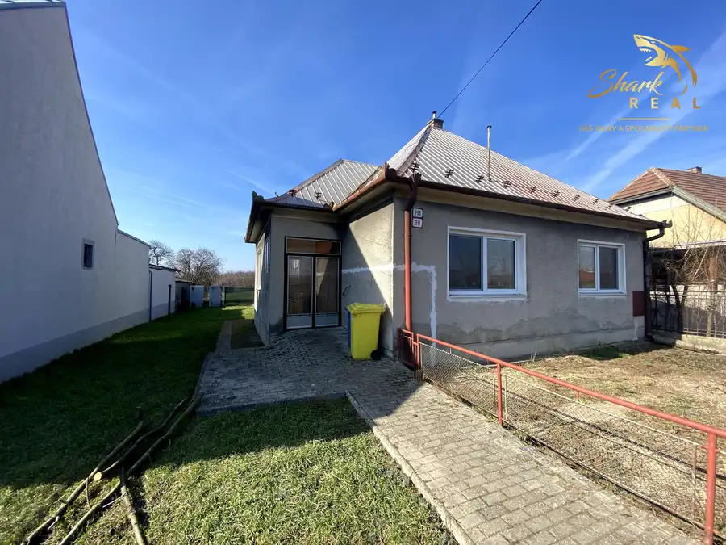
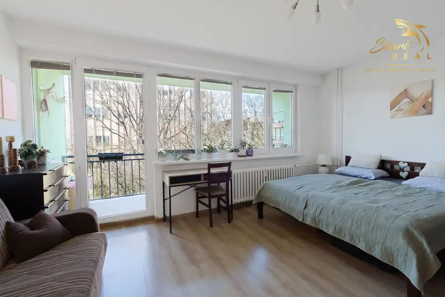

EXKLUZÍVNE - Malebný domček v obci Chtelnica
Chtelnica
- Plocha108 m²
- StavPôvodný stav
O nehnuteľnosti
Ponúkame na predaj rodinný dom v pôvodnom stave v obci Chtelnica. Nehnuteľnosť je zachovalá a predstavuje vhodný základ na rekonštrukciu podľa vlastných predstáv.Súčasťou domu je pozemok, ktorý je mierne svahovitý, čo ponúka zaujímavé možnosti úpravy záhrady či terénnych riešení. Výhodou je prístup k nehnuteľnosti z dvoch strán – z prednej aj zadnej ulice.Základné informácierodinný dom s 2 izbamipozemok: 527 m²zastavaná plocha domu: 108 m²dom v pôvodnom stavečiastočne podpivničenýzachovalé neobytné podkroviePozemok:mierne svahovitýprístup z dvoch ulíc (spredu aj zozadu)Technický stav:pôvodný stav vhodný na rekonštrukciuDispozícia domu:obývacia izba spojená s kuchyňousamostatná spálňaveľká špajza / komorakúpeľňachodbaVedľajšie stavby:hospodárske budovy riadne zapísané na liste vlastníctvaInžinierske siete:elektrinaplyn (vykurovanie gamatkami)vodovod (ohrev el. bojlerom)kanalizáciaLokalita:obec disponuje základnou školou (1.–9. ročník)potraviny, ihriskáv blízkosti priehrada vhodná na rekreáciuObhliadky je možné si dohodnúť IHNEĎ na tel. č. 0951 594 908 alebo prostredníctvom emailu zazo@sharkreal.skSHARK REAL – VÁŠ SILNÝ a SPOĽAHLIVÝ PARTNER V OBLASTI REALÍT
Parametre
| Doprava | MHD, Cesta |
|---|---|
| Druh | Rodinný dom |
| Dátum zverejnenia | 10. 4. 2026 |
| Energetický certifikát budovy | nie je |
| Plocha pozemku | 527 m² |
| Podpivničenie | Čiastočné |
| Počet kúpeľní | 1 |
| Počet nadzemných podlaží | 1 |
| Počet pivníc | 1 |
| Počet spální | 2 |
| Prístupová komunikácia | Dláždená, Asfaltová |
| Rok výstavby | 1940 |
| Stav nehnuteľnosti | Pôvodný stav |
| Terén pozemku | Mierne svahovitý |
| Typ | Predaj |
| Typ konštrukcie | Tehlová |
| Vybavenie | Záhrada, Skleník, Pivnica |
| Zastavaná plocha | 108 m² |
| Úžitková plocha | 108 m² |
Kde to je


Mohlo by Vás zaujímať

DomNové10 159 000 €Rodinný dom s veľkým pozemkom na predmestí Hlohovca Hlohovec 140 m² Ponúkame na predaj rodinný dom v pôvodnom stave v obci Šulekovo. Dom je napriek svojmu veku zachovalý, čistý a svetlý, čo vytvára dobrý základ pre…
BytRezervované10 137 900 €Veľký 2 izbový byt v tichej lokalite Piešťan so šatníkom Piešťany 2-izbový59 m²2. podlažie Vo výhradnom zastúpení majiteľa ponúkame 2 izbový byt v tichej lokalite Piešťan.BYT - PopisByt sa nachádza na druhom poschodí bytového domu. Je…